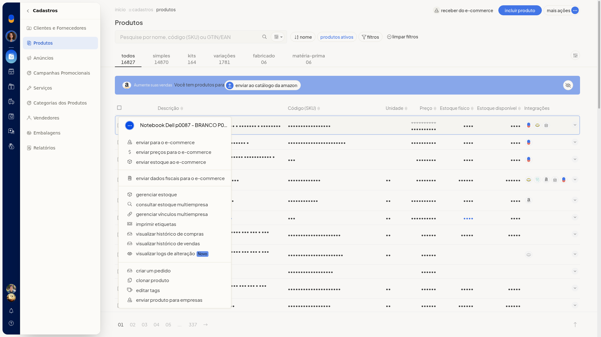
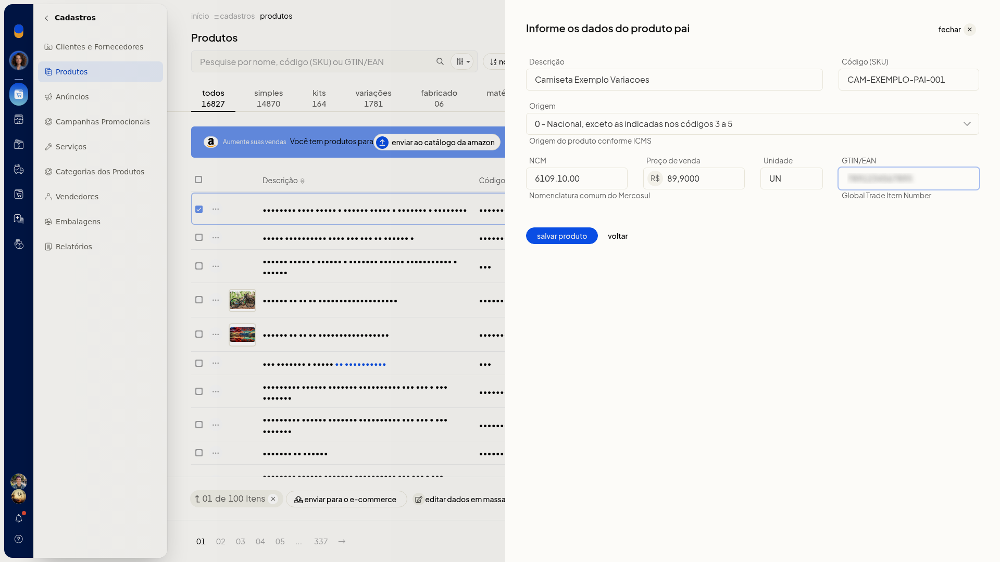

Transformar produtos em variações
Pré-requisitos
- Se Transformar em variações não aparecer, peça acesso ao administrador da conta.
Importante
- Marque ao menos um produto. A ação só aparece em Mais ações da barra de seleção.
- A ação não aparece no menu da linha do produto nem no Mais ações do cabeçalho.
- Cancelar abandona o fluxo sem alterar os produtos.
Instruções
-
Acesse Cadastros > Produtos.
-
Marque um ou mais produtos. A barra passa a mostrar Enviar para o e-commerce, editar dados em massa e Mais ações.
-
Abra Mais ações e clique em Transformar em variações.


-
Escolha Criar novo produto pai ou Utilizar produto pai existente. Criar novo produto pai já vem selecionado.
-
Clique em Continuar.

Criar novo produto pai
-
Em Informe os dados do produto pai, preencha Descrição, Código (SKU), Origem, NCM, Preço de venda, Unidade e GTIN/EAN. Nenhum desses campos aparece como obrigatório.
-
Em Origem, selecione o código de 0 a 8. Em Preço de venda, informe o valor em reais. Em GTIN/EAN, informe o Global Trade Item Number. Em NCM, informe a Nomenclatura comum do Mercosul.
-
Clique em Salvar produto. Voltar retorna à escolha sem gravar.

Utilizar produto pai existente
-
Selecione Utilizar produto pai existente e clique em Continuar.

-
Em Selecione o produto pai, busque o pai em Produto pai.
-
Clique em Selecionar produto. Voltar retorna sem gravar.

Informações adicionais
O produto também pode ser criado ou atualizado por outros canais
- Interface/Tela: criar sim, atualizar sim
- Lote (Planilha): criar sim, atualizar sim
- API V3: criar sim, atualizar sim
- Lis: criar sim, atualizar sim